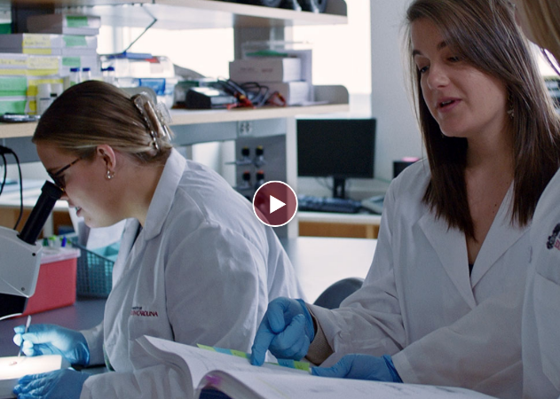

RESEARCH AT SOUTH CAROLINA
Research is a learning tool of the highest order at the University of South Carolina. Discovery allows us to illuminate history, contextualize the present, and help plan for what’s to come.
Scientific research, scholarship and creative activity abound throughout USC. That focused presence within nearly all colleges, departments and campuses of the state’s flagship university is one reason Carnegie Foundation has designated South Carolina as an institution of very high research activity.
Remarkable Research at USC
The University of South Carolina is the state’s most comprehensive health sciences research and teaching institution. Our researchers are working to solve some of the Palmetto State’s biggest health issues like stroke, autism and infectious diseases while preparing the next generation to tackle tomorrow’s challenges.
Built for overcoming barriers.
The University of South Carolina is one of the nation’s leading, large-scale research enterprises. Within our campus centers, labs and collectives, students scour for answers alongside experienced faculty. Whether the challenge is formulating new ways to inspire healthier communities or developing new fuel cells, be part of addressing tomorrow’s challenges, today.
STUDENT RESEARCH OPPORTUNITIESAchieving New Understanding
USC is home to world-class research and researchers. Get to know the university’s knowledge seekers and learn how their work generates innovation from arts and humanities to mathematics, engineering and the sciences.
BREAKTHROUGH RESEARCH